MusicMania
3 weeks, team of 4
Project Description
We built a web store that sells music equipment using WordPress and WooCommerce. Our goal was to ensure good usability and accessibility, allowing users to easily find what they are looking for.
Visit MusicMania (external link)
Research on Existing Products
We looked at other online stores that sell musical instruments to get ideas for our own website in order to make our webshop feel familiar to users, and figure out what elements we should include. We mainly looked for thomann.de, digitalpiano.com, and musik-produktiv.com.
For the homepage, we examined the layout, common elements, and the main navigation. The navigation typically includes a logo on the top left, a search bar in the centre, and account and cart options on the right. Below, there’s usually a category list. Most websites feature either a carousel or a hero image right below the header.
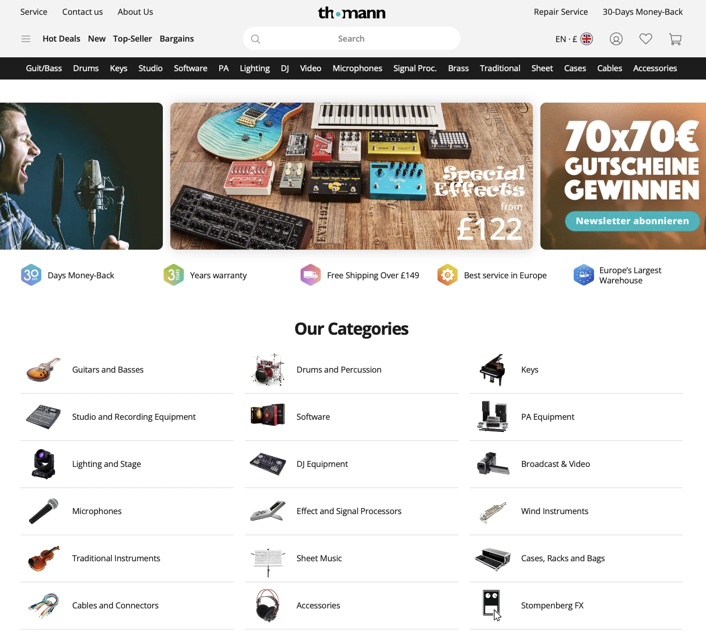
Click to enlarge
On category pages, there’s a sidebar for product filtering, where users can refine their search by brand, price, stock availability, colour, ratings, and category-specific attributes like the number of keys for a piano. Product listings display the name, image, price, and reviews.
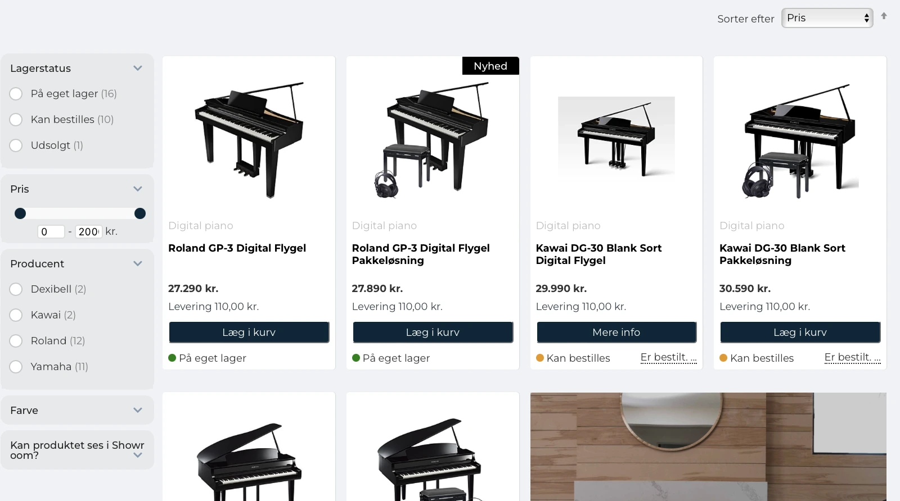
Click to enlarge
On product pages, you’ll find the product name, images, price, and an “add to cart” button. Some pages may include audio or video content. Below, there are usually detailed product specifications and related items.
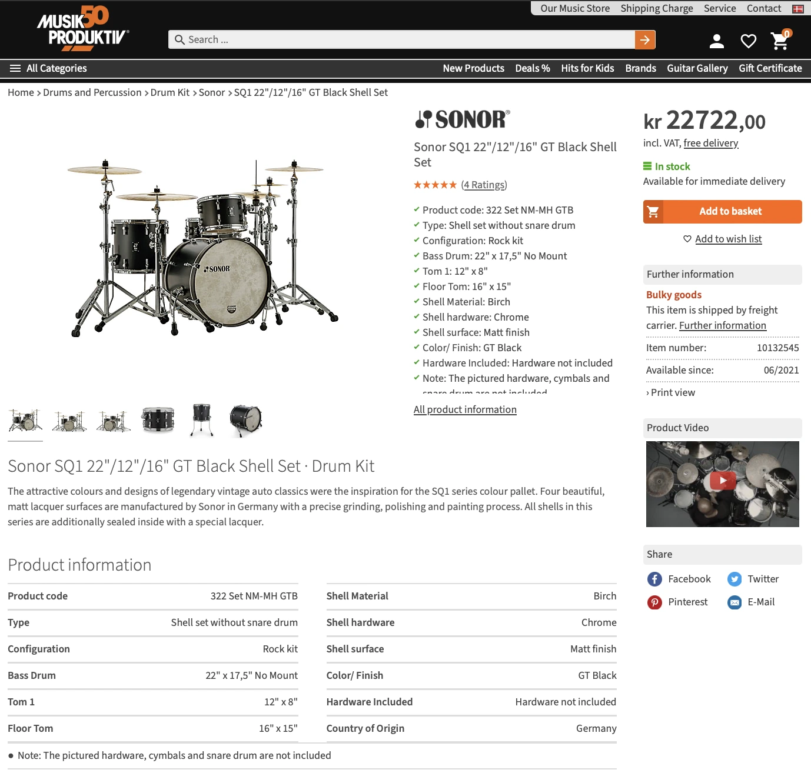
Click to enlarge
Information Architecture and Tree Testing
We categorised the products based on our research of how the other websites categorise them. After that, we conducted a tree test, made adjustments, and then did another tree test to ensure it was good to proceed.
In the first round, we organised the product and information pages into 5 main categories. The feedback indicated that participants generally found what they were looking for, but many struggled to locate the “Beginners’ guide,” which was hidden under “Articles.”
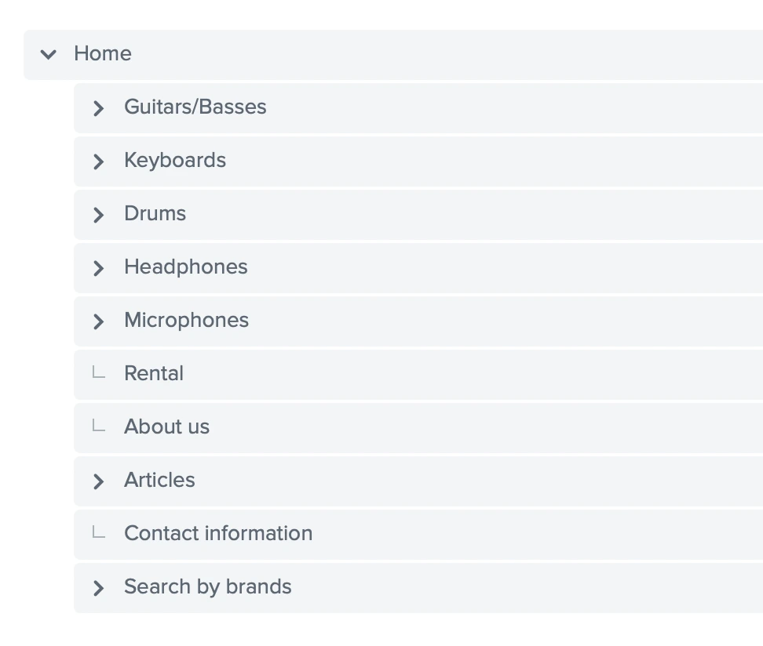
Click to enlarge
In the second round of testing, we relocated the “Beginners’ guide” to the navigation bar and added an “All products” category. Additionally, we merged “Microphones” and “Headphones” under “Accessories.”
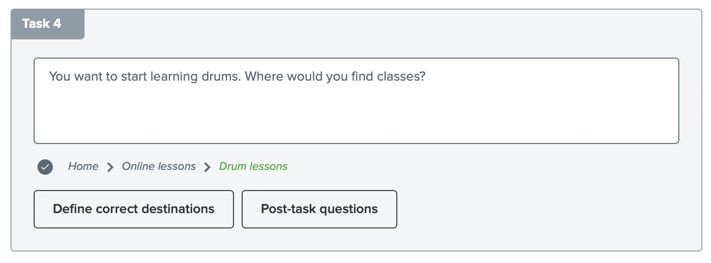
Click to enlarge
Most participants successfully navigated the updated layout. Although a few encountered difficulties, such as in task 4 in the image, we deemed it acceptable since there’s a link to “Online lessons” on the “Beginners’ guide” page.
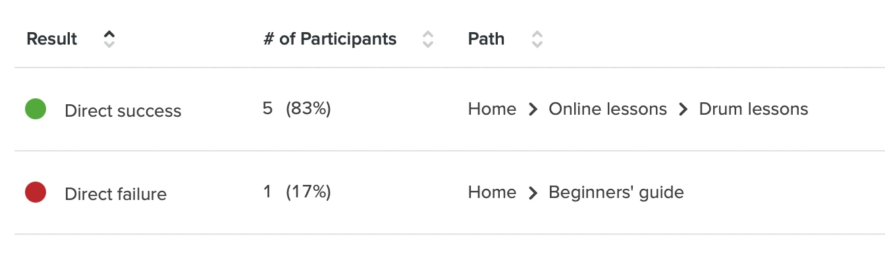
Click to enlarge
Accessibility and WCAG 2.2
Since we used a Content Management System (CMS) to build this website—specifically WordPress and WooCommerce—our ability to fully implement accessibility is somewhat limited due to the extent to which we can edit the platform. However, we have made efforts to make the product as inclusive as possible, regardless of users' abilities. We followed WCAG 2.2 guidelines as a reference for implementing accessibility.
We added clear outlines to focused elements using custom CSS in WordPress (2.4.7 Focus Visible).
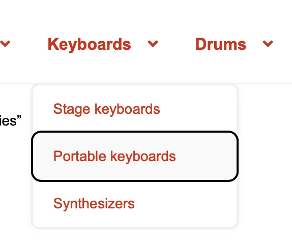
Click to enlarge
We were unable to add an aria-label to the 'Read more' link button (2.4.4 Link Purpose in Context) on the homepage due to limitations. However, WooCommerce automatically adds product titles to the 'Add to cart' buttons.
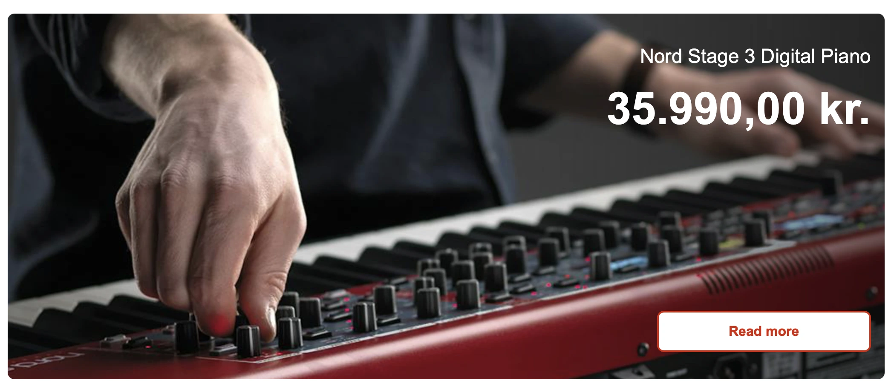
Click to enlarge
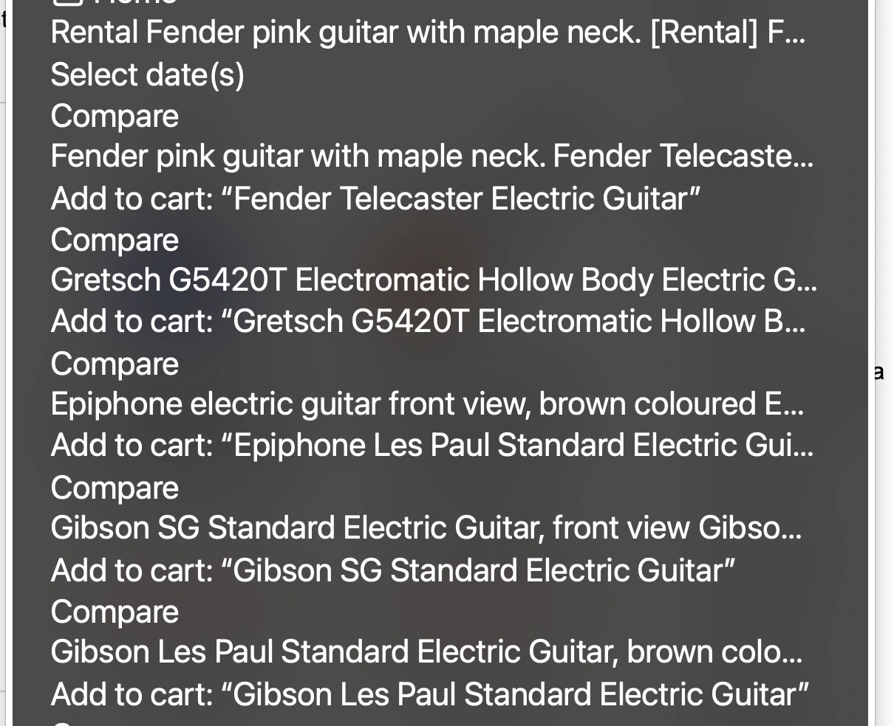
Click to enlarge
Although this is not explicitly stated in WCAG 2.2, we implemented dual coding on various page elements by combining text with images to enhance understandability.
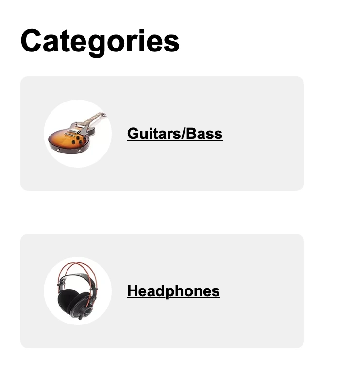
Click to enlarge
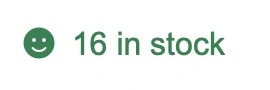
Click to enlarge
Due to the limited project timeline, we were unable to fully implement alt texts (1.1.1Non-text Content). However, we are aware of how crucial it is to include them.
We ensured that the accent colour has a contrast ratio of at least 4.5:1 against the background colour (1.4.3 Contrast - Minimum).
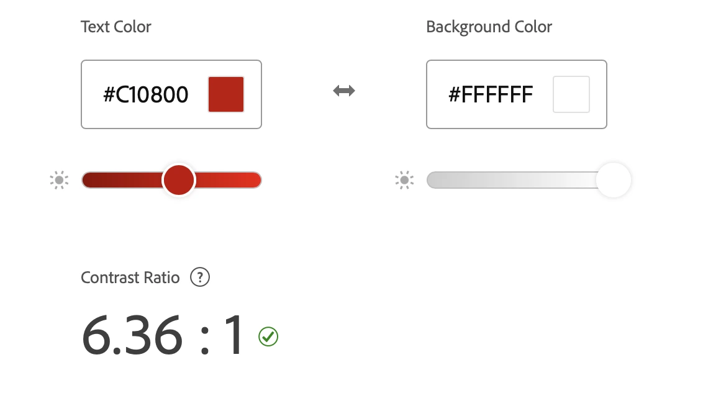
Click to enlarge